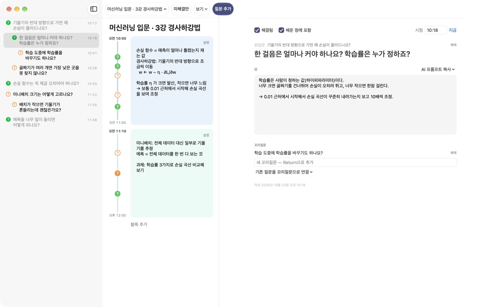
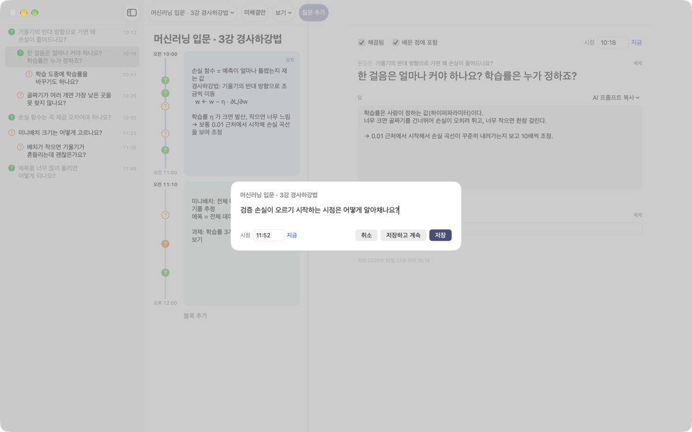
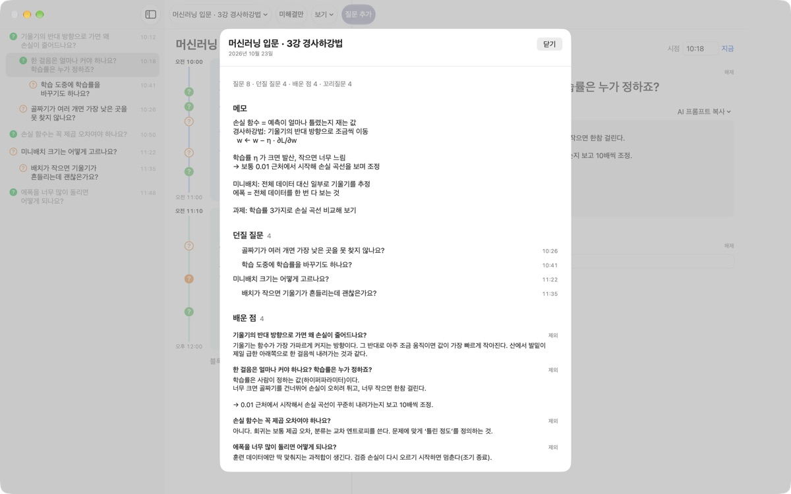
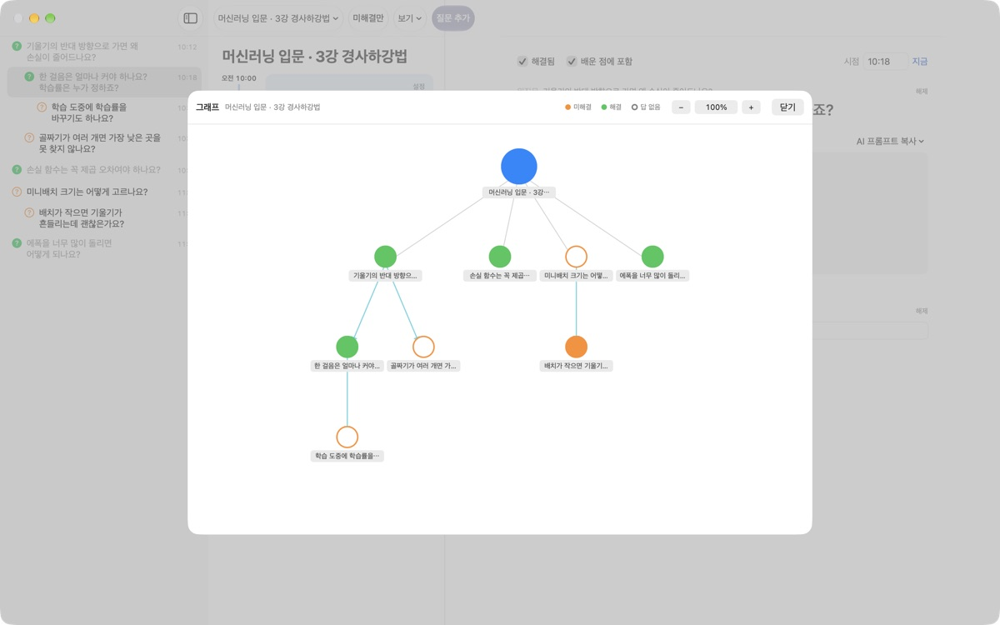

강의 중 떠오른 질문,
흘려보내지 마세요
⌘⇧N을 누르고 한 줄 적으면 그 시각의 메모 옆에 질문이 남아요. 강의는 계속 듣고, 답은 나중에 찾으면 돼요.
macOS 14 이상에서 쓸 수 있어요. 계정 없이 이 Mac에만 저장돼요.

직접 남겨 보세요
머신러닝 강의를 듣는 중이에요. 질문을 적고 저장하면 그 시각의 블록 옆에 ?가 생겨요. 시점을 블록 밖 시각으로 바꾸면 그 시각을 담는 블록이 새로 생겨요.
강의가 끝나면 그 질문, 기억나세요?
설명을 듣다 '왜 그렇지?' 싶은 순간이 와도 강의는 멈추지 않아요. 노트 귀퉁이에 적은 물음표는 어느 대목에서 나왔는지 잊히고, 결국 답을 찾지 못한 채 남아요. 질문노트는 질문을 그 시점의 메모와 함께 붙잡아 두고, 답을 찾을 때까지 놓치지 않게 해 줘요.
강의를 멈추지 않고 질문을 남겨요
툴바의 질문 추가나 ⌘⇧N으로 입력 창을 띄워요. 시점은 지금 시각으로 저절로 채워지고, Return이면 저장, ⌘Return이면 저장하고 바로 다음 질문을 적어요.
질문은 그 시각의 타임블록 옆에 ?로 표시돼서, 나중에 어느 설명에서 나온 질문인지 바로 보여요.

답을 찾으면 배운 점이 돼요
질문에 내 말로 답을 적고 해결로 바꾸면 요약의 '배운 점'에 모여요. 아직 못 푼 질문은 '던질 질문'에 남아서, 다음 시간에 물어볼 목록이 저절로 생겨요.
질문 상세의 AI 프롬프트 복사는 강의 이름과 그 시점의 메모를 채운 프롬프트를 클립보드에 담아 줘요. 쓰던 AI 서비스에 붙여 넣기만 하면 돼요.

생각이 뻗어 간 길이 보여요
질문에서 나온 꼬리질문은 원질문 아래 들여쓰기로 쌓이고, 그래프에서는 화살표로 이어져요. 노드를 누르면 그 질문으로 바로 가요.
강의를 듣기 전의 나, 마친 뒤 되고 싶은 나, 배우고 싶은 것을 학습 상태에 적어 두고 견줘 볼 수도 있어요.

시작은 세 단계면 돼요
- 1
강의를 만들어요
툴바 왼쪽 강의 이름 메뉴에서 새 강의를 추가해요. 대화 마크다운 파일을 가져와도 돼요.
- 2
떠오르면 바로 적어요
⌘⇧N을 누르고 한 줄이면 충분해요. 시점은 저절로 채워져요. - 3
나중에 답을 정리해요
답을 적고 ?를 눌러 해결로 바꾸면 배운 점에 모여요.
단축키
- ⌘⇧N
- 질문 추가
- Return
- 저장
- ⌘Return
- 저장하고 이어서 적기
- Esc
- 취소
- ⌘1
- 요약: 던질 질문, 배운 점, 메모
- ⌘2
- 그래프: 원질문과 꼬리질문의 관계
- ⌘3
- 타임블록: 모든 강의의 블록을 시간순으로
- ⌘4
- 학습 상태
- ⌘+ · ⌘- · ⌘0
- 글씨 크게, 작게, 기본 크기
모두 메뉴 막대의 보기 메뉴에도 있어요.
모든 기능이 무료예요
무료
- 빠른 질문과 타임블록 메모
- 꼬리질문과 그래프
- 요약, 타임블록 모아보기, 학습 상태
- AI 프롬프트 복사 다섯 단계
- 대화 마크다운 가져오기
개발자 응원하기
- 고마울 때 설정에서 작은 팁을 보낼 수 있어요
- 팁을 보내도 새로 열리는 기능은 없어요
보내지 않아도 모든 기능을 그대로 써요.
광고도 계정도 없어요. 기록은 이 Mac에만 저장돼요.
자주 묻는 질문
질문 옆 ? 표시의 색은 무슨 뜻인가요?
목록에서 주황 빈 원은 아직 해결하지 못한 질문, 초록 꽉 찬 원은 해결한 질문이에요. ?를 누르면 해결과 미해결이 바뀌고, 툴바의 미해결만을 켜면 못 푼 질문만 보여요. 타임블록 옆의 ?는 색이 해결 여부를, 꽉 찬 원이 답이 적혀 있다는 것을 뜻해요.
타임블록은 어떻게 생기나요?
블록 추가를 누르면 그 시각에 새 블록이 시작되고, 직전 블록은 그 시각까지로 맞춰져요. 어느 블록에도 들지 않는 시각에 질문을 남기면 그 시각을 담는 블록이 저절로 생겨요. 블록 오른쪽 위 설정에서 색, 시작 시각, 기간을 바꾸거나 지울 수 있고, 블록을 직접 지운 강의에서는 블록이 저절로 생기지 않아요.
'해결됨'과 '배운 점'은 어떻게 다른가요?
질문 상세에서 해결됨을 체크하면 그 질문을 배운 점에 넣을지 고를 수 있어요. 요약의 배운 점에는 해결했고 배운 점에 포함한 질문만 모여요. 요약 화면에서도 빼거나 다시 넣을 수 있고, 답은 그대로 남아요.
AI로 답을 찾으려면 어떻게 하나요?
질문 상세의 '답' 오른쪽 AI 프롬프트 복사에서 질문 다듬기, 답 찾기, 답 되묻기, 꼬리질문 뽑기, 내 답 채점받기 중 하나를 골라요. 강의 이름, 그 시점의 메모, 학습 상태, 원질문을 채운 프롬프트가 클립보드에 복사돼요. 내 답 채점받기는 답 칸에 내 말로 적은 내용이 있어야 쓸 수 있어요. 앱이 AI 서비스와 직접 통신하지는 않아요.
대화 마크다운 파일을 가져올 수 있나요?
강의 이름 메뉴의 마크다운에서 가져오기…에서 파일을 고르면 새 강의로 만들어져요. # 제목은 강의 이름이 되고, ## 섹션마다 첫 질문이 원질문, 이어지는 질문이 꼬리질문이 돼요. 파일에 처음 나오는 화자의 말은 질문, 다른 화자의 말은 바로 앞 질문의 답이 돼요. 원본 파일은 바뀌지 않아요.
질문이나 강의를 지우려면요?
질문은 목록에서 우클릭한 뒤 삭제, 강의는 강의 이름 메뉴의 현재 강의 삭제로 지워요. 강의를 지우면 그 강의의 질문과 블록도 함께 지워지고 되돌릴 수 없으니, 중요한 기록은 먼저 백업해 주세요.
기록은 어디에 저장되나요? 백업은요?
모든 기록은 이 Mac 안에만 저장되고 밖으로 보내지 않아요. 백업하려면 앱을 끈 뒤 ~/Library/Containers/com.lectureq.LectureQ/Data/Library/Application Support/LectureQ/ 폴더를 통째로 복사하세요. 앱은 버전과 실행한 날 같은 익명 사용 통계만 보내고, 적은 내용은 보내지 않아요.
글씨가 작아요.
⌘+로 크게, ⌘-로 작게, ⌘0으로 기본 크기로 돌아가요. 85%부터 200%까지 조절되고 설정은 저장돼요.
어떤 Mac에서 쓸 수 있나요?
macOS 14 이상에서 동작해요. 소스 코드는 GitHub의 M1zz/LectureQ 저장소에 공개되어 있어요.
문제가 생기면 어디로 알려야 하나요?
앱의 설정(⌘,)에서 피드백을 보내거나 아래 메일로 알려 주세요. macOS 버전과 어떤 동작에서 문제가 생겼는지 적어 주시면 빠르게 확인할 수 있어요.
궁금한 점이나 의견은 mizzking75@gmail.com로 보내 주세요.